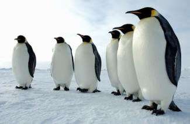
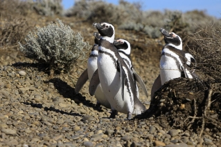

On confond souvent les termes << manchot >> et << pingouin >>, en raison des légères ressemblances physiques de ces
oiseaux, et de la traduction anglaise penguin. Cependant ces deux sortes d'oiseaux n'ont aucune parenté.
En outre, le manchot vit dans l'hémisphère sud, tandis que le pingouin se rencontre dans l'hémisphère nord, jusqu'en Bretagne. Aussi contrairement au manchot, le pingouin sait voler.
Le Manchot papou peut atteindre 35 km/h à la nage (contre 9 km/h pour le meilleur nageur olympique) et le Manchot empereur peut plonger à plus de 520 m pour rechercher de la nourriture, soit le record absolu chez tous les oiseaux.
Le cri des manchots est appelé braiement ou jabotement.
| Nom de l'espèce | Illustration |
|---|---|
| Manchot Empereur |  |
| Manchot de Magellan |  |
Plus d'informations sur cette page : Wikipedia-Manchot